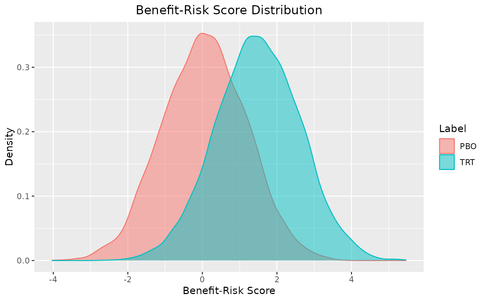
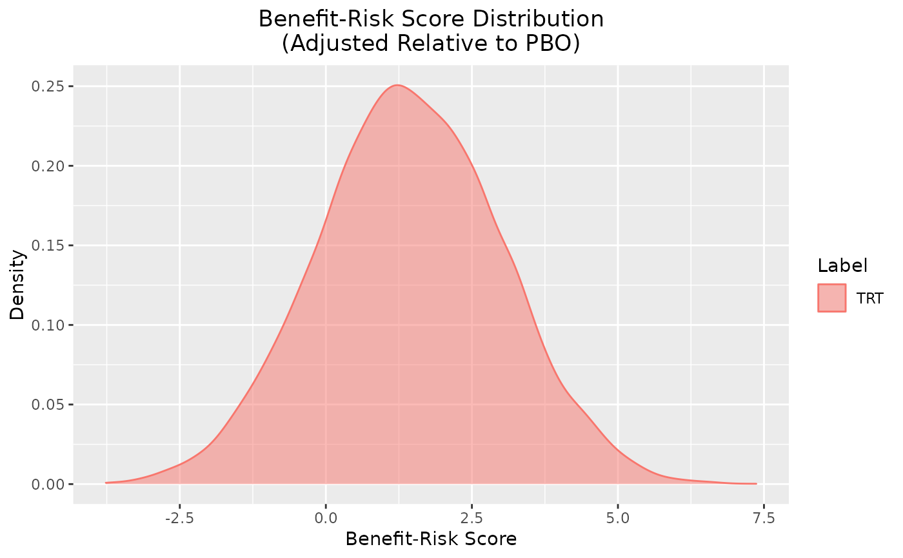
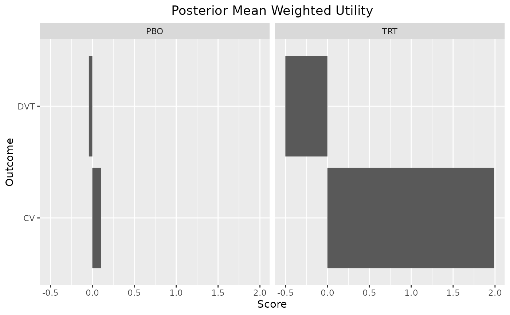
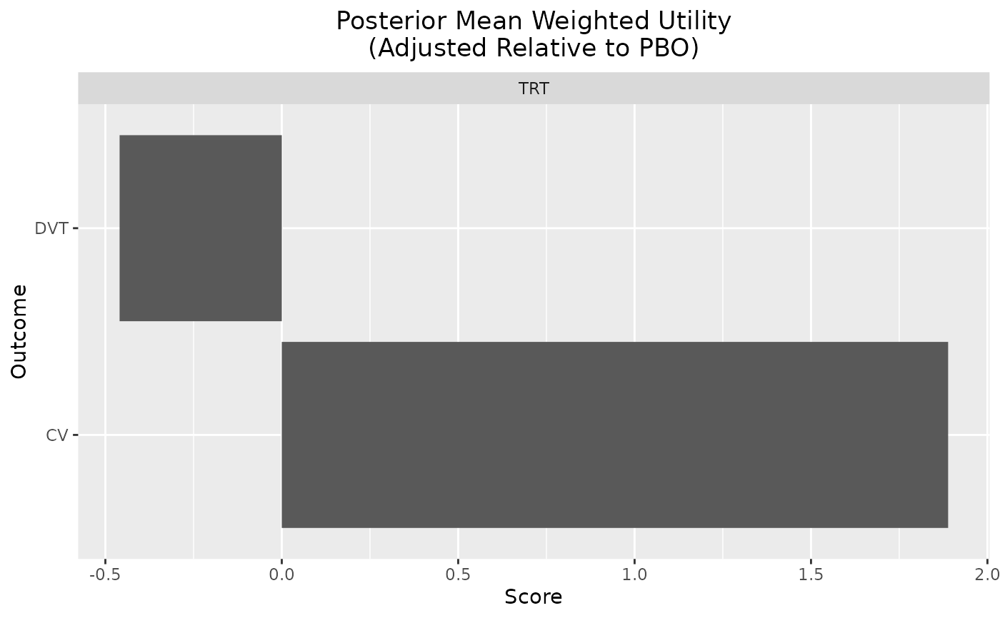
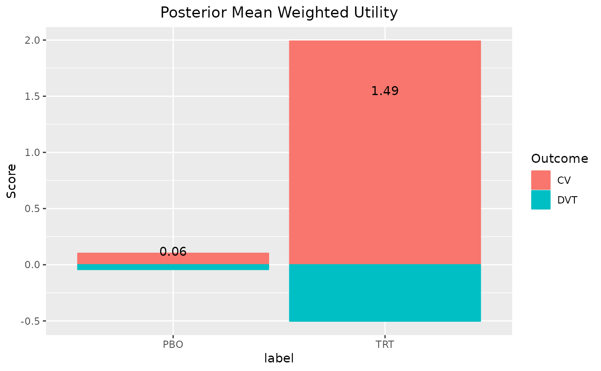

Posterior Samples for a Benefit/Risk Group
br_group(label, ...)A named list with the posterior samples and an assigned S3 class.
This function is intended to be used as an input argument to
the br() function.
set.seed(1132)
out <- br(
benefit("CV", function(x) x, weight = 1),
risk("DVT", function(x) - .5 * x, weight = 1),
br_group(
label = "PBO",
CV = rnorm(1e4, .1),
DVT = rnorm(1e4, .1)
),
br_group(
label = "TRT",
CV = rnorm(1e4, 2),
DVT = rnorm(1e4, 1)
)
)
out
#> # A tibble: 20,000 × 11
#> CV CV_weight CV_uti…¹ CV_sc…² DVT DVT_w…³ DVT_u…⁴ DVT_s…⁵ label iter
#> <dbl> <dbl> <dbl> <dbl> <dbl> <dbl> <dbl> <dbl> <chr> <int>
#> 1 1.47 1 1.47 1.47 0.439 1 -0.219 -0.219 PBO 1
#> 2 0.239 1 0.239 0.239 -2.12 1 1.06 1.06 PBO 2
#> 3 0.969 1 0.969 0.969 0.974 1 -0.487 -0.487 PBO 3
#> 4 0.655 1 0.655 0.655 0.0771 1 -0.0385 -0.0385 PBO 4
#> 5 1.51 1 1.51 1.51 -0.993 1 0.496 0.496 PBO 5
#> 6 -1.32 1 -1.32 -1.32 -0.874 1 0.437 0.437 PBO 6
#> 7 0.395 1 0.395 0.395 1.03 1 -0.513 -0.513 PBO 7
#> 8 -1.43 1 -1.43 -1.43 -0.903 1 0.452 0.452 PBO 8
#> 9 0.180 1 0.180 0.180 -0.685 1 0.343 0.343 PBO 9
#> 10 -0.960 1 -0.960 -0.960 -1.50 1 0.749 0.749 PBO 10
#> # … with 19,990 more rows, 1 more variable: total <dbl>, and abbreviated
#> # variable names ¹CV_utility, ²CV_score, ³DVT_weight, ⁴DVT_utility,
#> # ⁵DVT_score
summary(out, probs = c(.025, .5, .975))
#> $summary
#> # A tibble: 2 × 5
#> label mean `2.50%` `50.00%` `97.50%`
#> <chr> <dbl> <dbl> <dbl> <dbl>
#> 1 PBO 0.0600 -2.09 0.0628 2.22
#> 2 TRT 1.49 -0.742 1.49 3.68
#>
#> $scores
#> # A tibble: 20,000 × 11
#> CV CV_weight CV_uti…¹ CV_sc…² DVT DVT_w…³ DVT_u…⁴ DVT_s…⁵ label iter
#> <dbl> <dbl> <dbl> <dbl> <dbl> <dbl> <dbl> <dbl> <chr> <int>
#> 1 1.47 1 1.47 1.47 0.439 1 -0.219 -0.219 PBO 1
#> 2 0.239 1 0.239 0.239 -2.12 1 1.06 1.06 PBO 2
#> 3 0.969 1 0.969 0.969 0.974 1 -0.487 -0.487 PBO 3
#> 4 0.655 1 0.655 0.655 0.0771 1 -0.0385 -0.0385 PBO 4
#> 5 1.51 1 1.51 1.51 -0.993 1 0.496 0.496 PBO 5
#> 6 -1.32 1 -1.32 -1.32 -0.874 1 0.437 0.437 PBO 6
#> 7 0.395 1 0.395 0.395 1.03 1 -0.513 -0.513 PBO 7
#> 8 -1.43 1 -1.43 -1.43 -0.903 1 0.452 0.452 PBO 8
#> 9 0.180 1 0.180 0.180 -0.685 1 0.343 0.343 PBO 9
#> 10 -0.960 1 -0.960 -0.960 -1.50 1 0.749 0.749 PBO 10
#> # … with 19,990 more rows, 1 more variable: total <dbl>, and abbreviated
#> # variable names ¹CV_utility, ²CV_score, ³DVT_weight, ⁴DVT_utility,
#> # ⁵DVT_score
#>
summary(out, reference = "PBO")
#> $summary
#> # A tibble: 1 × 5
#> label mean `2.50%` `97.50%` reference
#> <chr> <dbl> <dbl> <dbl> <chr>
#> 1 TRT 1.43 -1.65 4.53 PBO
#>
#> $scores
#> # A tibble: 10,000 × 12
#> CV CV_weight CV_utility CV_sc…¹ DVT DVT_w…² DVT_u…³ DVT_s…⁴ label iter
#> <dbl> <dbl> <dbl> <dbl> <dbl> <dbl> <dbl> <dbl> <chr> <int>
#> 1 1.01 1 1.01 1.01 0.381 1 -0.190 -0.190 TRT 1
#> 2 1.66 1 1.66 1.66 1.84 1 -0.920 -0.920 TRT 2
#> 3 0.473 1 0.473 0.473 0.403 1 -0.201 -0.201 TRT 3
#> 4 2.59 1 2.59 2.59 0.0774 1 -0.0387 -0.0387 TRT 4
#> 5 2.39 1 2.39 2.39 2.47 1 -1.23 -1.23 TRT 5
#> 6 2.43 1 2.43 2.43 1.08 1 -0.541 -0.541 TRT 6
#> 7 1.58 1 1.58 1.58 2.02 1 -1.01 -1.01 TRT 7
#> 8 3.10 1 3.10 3.10 1.04 1 -0.521 -0.521 TRT 8
#> 9 3.48 1 3.48 3.48 0.644 1 -0.322 -0.322 TRT 9
#> 10 1.10 1 1.10 1.10 0.586 1 -0.293 -0.293 TRT 10
#> # … with 9,990 more rows, 2 more variables: total <dbl>, reference <chr>, and
#> # abbreviated variable names ¹CV_score, ²DVT_weight, ³DVT_utility, ⁴DVT_score
#>
plot(out)

# adjusted relative to PBO
plot(out, reference = "PBO")

plot_utility(out)

plot_utility(out, reference = "PBO")

plot_utility(out, stacked = TRUE)
